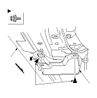

Rear Strake Replacement
Remove the bolts, then remove the rear strake (A) from under the side sill panel (B) on each side. Take care not to scratch the body.
Install the strake in the reverse order of removal.
